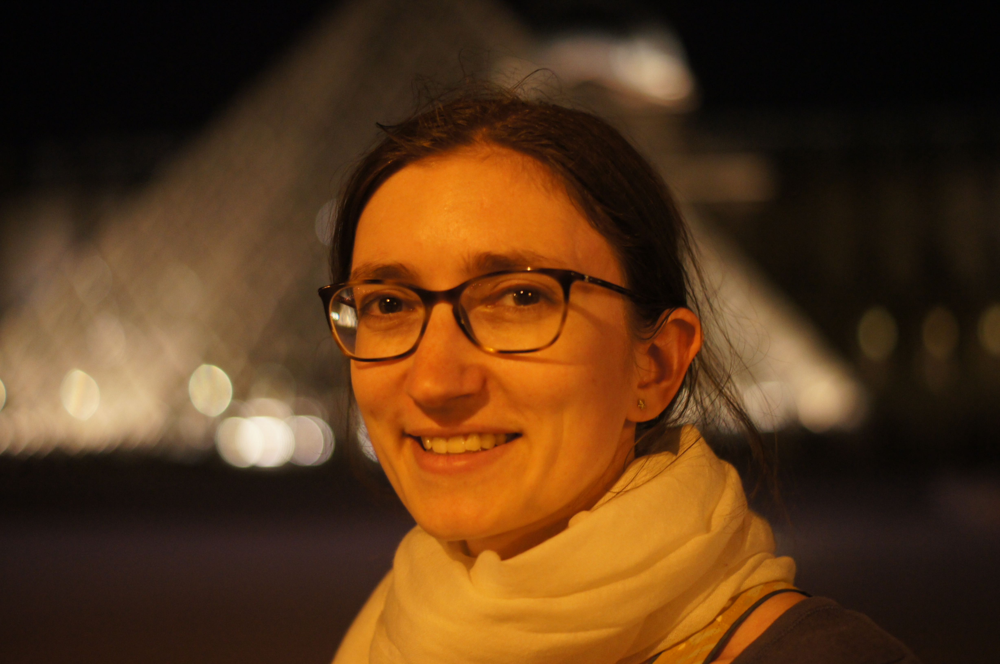

Dorian Soergel |
|
|
Laboratoire de Géologie de Lyon - Terre Planètes Environnment
UMR CNRS 5276 Université Lyon 1 Claude Bernard 2, rue Raphaël Dubois 69622 Villeurbanne Cedex France dorian.soergel at univ-lyon1.fr pronouns: he/him |
 |
|
| |
|
I am a PostDoc at the LGL-TPE in Lyon, France. I'm working mainly with Thomas Bodin . My research is about adapting bayesian inversion to big datasets. I am also interested in noise interferometry and more generally processing large geophysical datasets.
My CV can be found here. | |
Publications, preprints, and work in preparation
| |
Recent & upcoming talks
| |
|
June 2022 | |